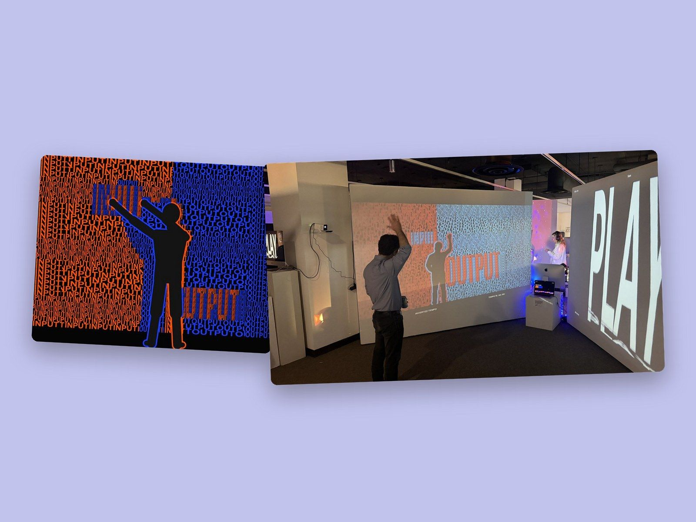
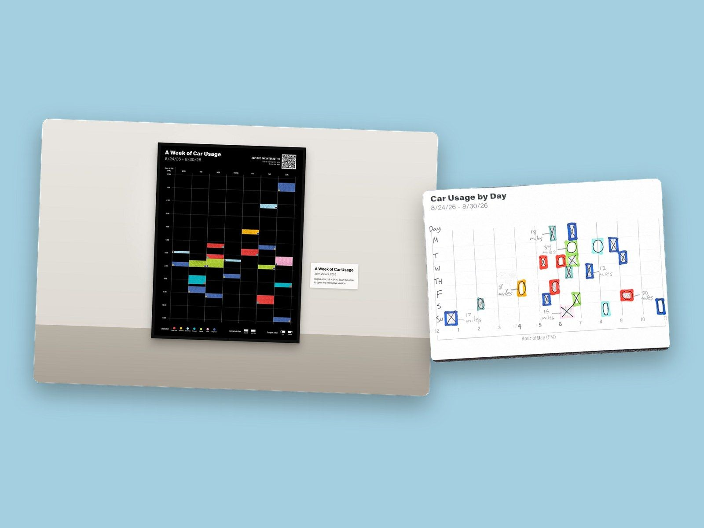

Graphic designer in New Orleans · In-house at Laborde Products · Bachelor of Design, Loyola University New Orleans, 2028
I turn ideas into thoughtful design.
Selected work.
2025–2026
JZ.001 · Featured
Laborde Print Ads
Print advertising · 2026
Ten trade ads for Mitsubishi, Scania and Steyr Motors engines, designed from nothing, plus two templates the team now uses.
AdvertisingPrintTemplates


JZ.002
Input + Output
Interactive installation · 2026
InteractiveInstallationType

JZ.003
A Week of Car Usage
Data visualization in four mediums · 2026
Data vizPosterMotionInteractive

JZ.004
Movie Title Time Machine
Opening title sequence · 2026
MotionTitle designType
More work.
Ten more projects in print, motion and type. Choose a label above to see them as tiles.
 JZ.005Summer at LabordeA summer as Laborde’s graphic design intern: a wall, a handbook, 754 training slides and more.In-house internship2026
JZ.005Summer at LabordeA summer as Laborde’s graphic design intern: a wall, a handbook, 754 training slides and more.In-house internship2026 JZ.006NASA Rover Poster SeriesThree Mars rovers, told through the tracks they left behind.Poster series2025
JZ.006NASA Rover Poster SeriesThree Mars rovers, told through the tracks they left behind.Poster series2025 JZ.007Movie TrailerA 30-second SYFY trailer for a 1956 sci-fi film, led by its type.Motion2026
JZ.007Movie TrailerA 30-second SYFY trailer for a 1956 sci-fi film, led by its type.Motion2026 JZ.008Bloom Festival ProjectionLOVE, projected in a chapel, with seven poem titles turning around it.Type projection2026
JZ.008Bloom Festival ProjectionLOVE, projected in a chapel, with seven poem titles turning around it.Type projection2026 JZ.009Animated PosterHerbert Bayer’s poster, built up as the Tower of Babel and brought back down.Animated poster2025
JZ.009Animated PosterHerbert Bayer’s poster, built up as the Tower of Babel and brought back down.Animated poster2025 JZ.010Mitsubishi Marine Power GuideLaborde’s Mitsubishi engine guide, redesigned and expanded.Editorial redesign2026
JZ.010Mitsubishi Marine Power GuideLaborde’s Mitsubishi engine guide, redesigned and expanded.Editorial redesign2026 JZ.011Northbrew Tea CompanyA tea brand made for the trail, from the name to the pouch.Identity and packaging2025
JZ.011Northbrew Tea CompanyA tea brand made for the trail, from the name to the pouch.Identity and packaging2025 JZ.012Sci-Fi Book Cover RedesignA full cover for Do Androids Dream of Electric Sheep?, where a few squares hide among circles.Book cover2025
JZ.012Sci-Fi Book Cover RedesignA full cover for Do Androids Dream of Electric Sheep?, where a few squares hide among circles.Book cover2025 JZ.013Jazz Fest BookletTwo weekends of Jazz Fest, folded into a long, narrow booklet.Editorial booklet2025
JZ.013Jazz Fest BookletTwo weekends of Jazz Fest, folded into a long, narrow booklet.Editorial booklet2025 JZ.014News Gothic Type SpecimenA specimen book for News Gothic, the typeface on the first Scrabble tiles.Type specimen book2025
JZ.014News Gothic Type SpecimenA specimen book for News Gothic, the typeface on the first Scrabble tiles.Type specimen book2025